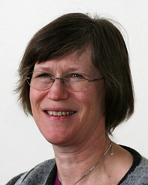
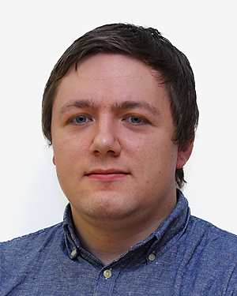
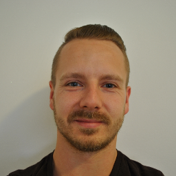
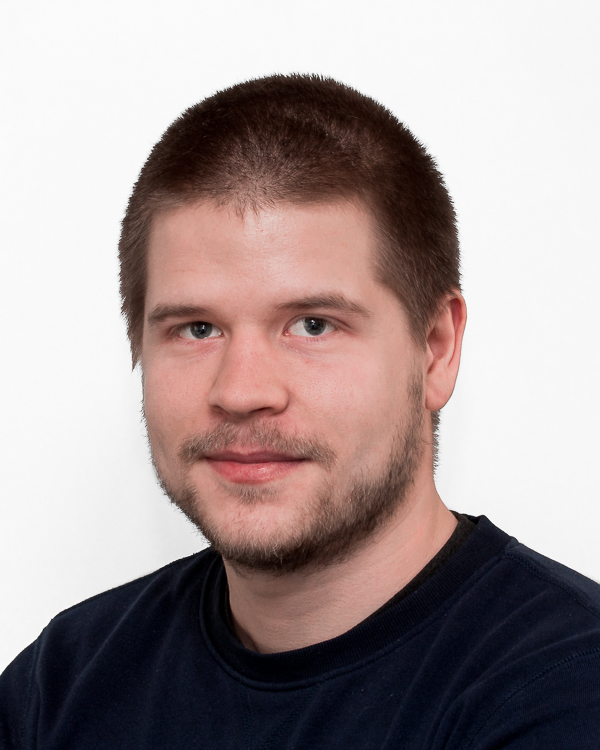
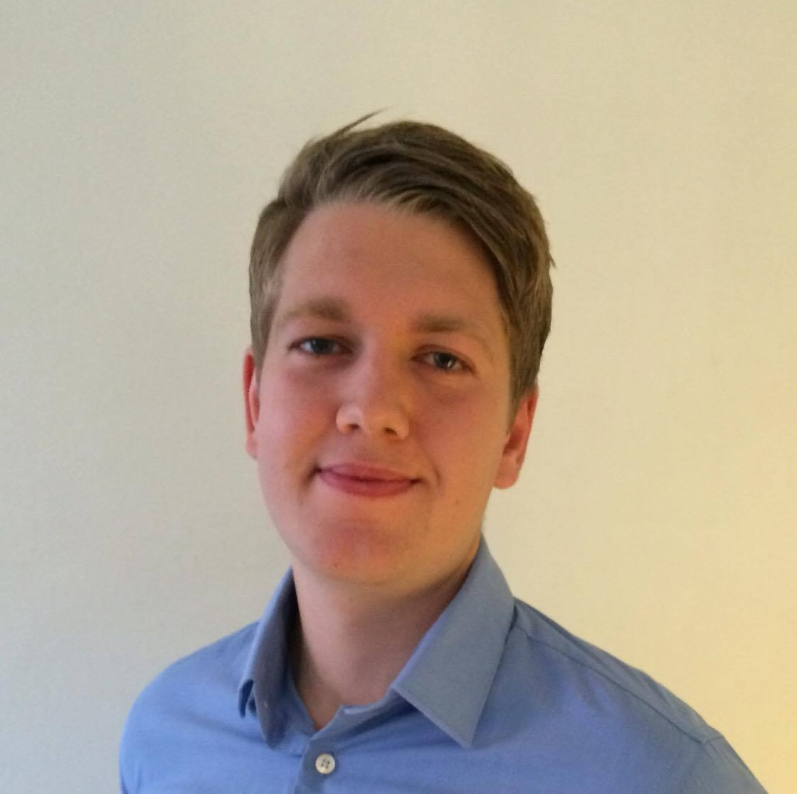

Foredrag
Velkommen til fagseminar - Network of teams
Litt om programmet disse fagdagene og praktisk informasjon. Deretter snakker Jan Henrik om faglige satsningsområder; hvor vi er og hvor vi skal! Til slutt får Jan Henrik hjelp av Christer for å snakke om Objectnet som network of teams!
Keynote (30 min), Søndag 15. Oktober 09:00-09.30, Rom: Athena

Jan Henrik Gundelsby
Jobber for tiden litt hos Oslo kommune med arkitektur og prosess. Driver også med salg, marked og hvordan vi skal få de rette nye prosjektene. Glad i naturen og lidenskapelig opptatt av fag!
Christer Kjellesvig
Christer er glødende opptatt av proaktiv forvaltning og effektene som skapes i samarbeid med et langsiktig perspektiv. Til daglig jobber han tett med våre største kunder, hvor gjensidig nytte er et mantra. Bakgrunn som økonom og teknolog. Bedre på å forstå det egentlig behovet, enn å realisere det teknisk.
Nytt ERP-system i Knowit
Nytt ERP-system i Knowit
Keynote, Søndag 15. Oktober 09:30-09.55, Rom: Athena

Bjørg Haaland
Bjørg Haaland er viseadministrerende direktør i KnowIT Objectnet og jobber i all hovedsak operasjonelt. Bjørg har spisskompetanse innenfor prosjektledelse og leder utviklingsprosjekter av betydelig størrelse. Hun har stor arbeidskapasitet, betydelig prosjektledererfaring fra store prosjekter i offentlig sektor, er engasjert og bryr seg om personene rundt seg. Bjørg får ting gjort både fort og effektivt.
Coldfusion-surprise announcement
Coldfusion kom ut i 1995, og lever fortsatt i mange produksjonsmiljøer. Vi skal vise litt kort hva som eksisterer der ute og argumentere hvorfor vi burde fokusere mer på dette feltet i nærmeste fremtid.
Introduksjon, Søndag 15. Oktober 09:55-10.00, Rom: Athena

Kennet Vuong
Kennet er en ivrig utvikler som stadig er på jakt etter nye utfordringer og teknologier. Han ser på seg selv som en full-stack utvikler som trives godt både på fremsia med web- og mobilutvikling og på baksia med database- og serverapplikasjoner. Gjennom tidligere erfaringer har Kennet jobbet som DevOps-utvikler og objektorientert systemutvikling innenfor JVM. I tillegg har han vært scrum master og team- og techlead innenfor frontend. Kennet liker å jobbe i team i tett samarbeid med kunder og designere. Som person er Kennet positiv, ansvarsfull, ambisiøs og svært målrettet. Han ønsker alltid å utvikle seg faglig, og liker godt å påta seg nye og krevende utfordringer.

Thuc Hoang
Han jobber målrettet, verdsetter personlig kompetanseutvikling svært høyt og brenner etter å lære seg nye programmeringsspråk og teknologier. Thuc har dedikert mye av fritiden sin til å jobbe med NodeJS, nettverk og infrastruktur og sikkerhetstesting. Han jobber godt selvstendig og i team. I tillegg er han veldig lett å komme i kontakt med. Har erfaring med prosjekter hvor smidige metoder er brukt (både i skole og jobb). Han er svært fleksibel når det kommer til ansvar på jobb, og yter alltid sitt beste uavhengig hvor, hvem han er leid ut til og hva han jobber med.
Life as a senior - how to make it and how to fake it
Noen har begynt å kalle Rune for senior. Han er litt usikker på hva det egentlig innebærer, men har forstått det slik at enkelte virker å mene han har noe nyttig erfaring å dele. Sånt tiltaler et ego. Så her kommer et erfaringsforedrag om ting og triks han har plukket opp langs veien som konsulent, og som han misbruker rått for å få verden til å bli et best mulig sted for seg selv, og et decent sted for de som jobber i hans nærmeste omkrets.
Lyntale, Søndag 15. Oktober 10.15-10.55, Rom: Athena

Rune Storløpa
Jobber for tiden for NDLA med å konvertere beslutningstageres mange innfall til kjørende systemer med lengst mulig levetid. Noe som innebærer alt fra å tolke ulne Word-dokumenter til å sette opp arkitektur i skyen. Og innimellom bidrar han her og der i sjappa, både i faglige sammenhenger og mer salgsorientert og markedsrelatert...
Mine fuckups de siste 20 årene
I gamle dager programmerte Jan Henrik på Amigaen; fra han var 13 år omtrent. Siden den gang har han gjort mye rart, og feilet uttallige ganger. I denne historien mimres det tilbake om databaser, unix, domeneforståelse, umodne produkter og hastige beslutninger, feil i produksjon og ville teknologivalg. Håper noen liker meg etterpå.
Lyntale, Søndag 15. Oktober 10.15-10.55, Rom: Athena
Jan Henrik Gundelsby
Jobber for tiden litt hos Oslo kommune med arkitektur og prosess. Driver også med salg, marked og hvordan vi skal få de rette nye prosjektene. Glad i naturen og lidenskapelig opptatt av fag!
Ting du ikke trenger å vite om å jobbe fra Japan
Har du noensinne drømt om å jobbe fra utlandet? Kanskje langt unna, i nærheten av stillehavet? Jeg har nettopp jobbet tre uker fra Japan og jeg skulle gjerne ha delt masse nyttige tips som kan hjelpe andre, men det har jeg ikke, så derfor skal jeg fortelle om masse unyttige ting istedet.
Lyntale, Søndag 15. Oktober 11:00-12:00, Rom: Athena

Christoffer Eliesen
Christoffer er en engasjert utvikler som brenner for IT. Han er nysgjerrig og glad i å lære nye ting. Han stiller høye krav til seg selv og det han leverer, men er pragmatisk når det trengs. Hans interesse for IT spenner seg hele veien fra operativsystem til brukergrensesnitt, og han er derfor en naturlig fullstack og 'devops' utvikler. I disse tider er det frontend som er i vinden og Christoffers hjerte følger etter. React og Node er spennende teknologier som passer han midt i blinken. Både 'gammel' jQuery og ny React er teknologier som er givende å jobbe med for Christoffer. Flere års erfaring har gjort han trygg i rollen som konsulent. Han er beskjeden, samtidig som han er en dyp tenker med rolige øyne og et brennende hjerte.
GDPR - Hva er dette og hva betyr det i praksis for meg og deg?
GDPR - Hva er dette og hva betyr det i praksis for meg og deg?
Lyntale, Søndag 15. Oktober 11:00-12:00, Rom: Athena

Joakim Lehn
Våren 2015 ble Joakim uteksaminert fra NTNU med en sivilingeniørgrad innenfor teknisk kybernetikk med spesialisering innefor navigasjon og fartøystyring. Han har tilegnet seg kompetanse innenfor mange felt gjennom varierte prosjekter, han har erfaring med blant annet android, roboter, quadcopter og sonarer med spesielt fokus på programmering, modellering, automatisering og prototyping. Disse prosjektene har gitt Joakim erfaring med flere programmeringsspråk, hovedsaklig med C, Scala, Java og Matlab. Joakim blir motivert av teambasert arbeid, og har ansvar som leder og arkitekt for et autonomt, tverrfaglig team. Dette ansvaret omfatter analyse/design av løsning, estimering, avklaringer mot kunde og utviklere i teamet, kvalitetssikring, oppfølging og rapportering. Utover dette har han gode engelskkunnskaper etter å ha studert et år i USA. Han liker nye utfordringer og har en genuin interesse for teknologi.
Hva backend kan lære av frontend
I denne talkene kommer jeg til å gå igjennom en del nyttige verktøy/konsepter/metoder som blir brukt i moderne frontend-applikasjoner. Flere av disse ideene er ting som jeg tror også kunne være nyttig på backend. Noen av de finnes, men er kanskje ikke like utbredt der som de burde være. Transpilling, formattering, hot-reloading og snapshot testing er blant tingene som blir gjennomgått.
Lyntale, Søndag 15. Oktober 11:00-12:00, Rom: Athena
Øyvind Marthinsen
Øyvind er en engasjert utvikler som brenner for utvikling av moderne web applikasjoner. Han trives like godt på klientsiden som på serversiden, og har gjennom deltakelse i flere større og mindre prosjekter tilegnet seg mye kunnskap om smidige metoder og prosjektstyring. Øyvind er en fullstack utvikler, men har de siste årene jobbet mest med frontendteknologier som JavaScript, HTML5 og CSS3. I tillegg har han stor interesse for mobile plattformer og responsivt design. Gjennom flere år som konsulent har han fått kunnskap om og erfaring med hele systemutviklingsprosessen, fra planlegging og design til testing og produksjonssetting. Øyvind er flink til å se kundens behov og setter alltid brukeren i fokus under utvikling av løsninger. Han er også en pragmatisk person som liker å utfordre seg selv på å lage enkle løsninger for komplekse problemer.
How modern cloud services can help you create awesome apps
How modern cloud services can help you create awesome apps
Lyntale, Søndag 15. Oktober 11:00-12:00, Rom: Apolo
Kennet Vuong
Kennet er en ivrig utvikler som stadig er på jakt etter nye utfordringer og teknologier. Han ser på seg selv som en full-stack utvikler som trives godt både på fremsia med web- og mobilutvikling og på baksia med database- og serverapplikasjoner. Gjennom tidligere erfaringer har Kennet jobbet som DevOps-utvikler og objektorientert systemutvikling innenfor JVM. I tillegg har han vært scrum master og team- og techlead innenfor frontend. Kennet liker å jobbe i team i tett samarbeid med kunder og designere. Som person er Kennet positiv, ansvarsfull, ambisiøs og svært målrettet. Han ønsker alltid å utvikle seg faglig, og liker godt å påta seg nye og krevende utfordringer.
Awesome deployment pipelines with Spinnaker
Awesome deployment pipelines with Spinnaker
Lyntale, Søndag 15. Oktober 11:00-12:00, Rom: Apolo

Joachim Seilfaldet
Joachim er en utvikler med erfaring innenfor objektorienert- og funksjonellutvikling.
Hvor får man mest for pengene i skyen 💰
Alle ønsker å bruke cloud når de utvikler nye ting, dette gjelder både på jobb og hjemme. Men hvor får man egentlig mest for pengene? I denne talken skal vi gå dypere ned på maskinvare-nivå og se hva de ulike skyleverandørene tilbyr.
Lyntale, Søndag 15. Oktober 11:00-12:00, Rom: Apolo
Thuc Hoang
Han jobber målrettet, verdsetter personlig kompetanseutvikling svært høyt og brenner etter å lære seg nye programmeringsspråk og teknologier. Thuc har dedikert mye av fritiden sin til å jobbe med NodeJS, nettverk og infrastruktur og sikkerhetstesting. Han jobber godt selvstendig og i team. I tillegg er han veldig lett å komme i kontakt med. Har erfaring med prosjekter hvor smidige metoder er brukt (både i skole og jobb). Han er svært fleksibel når det kommer til ansvar på jobb, og yter alltid sitt beste uavhengig hvor, hvem han er leid ut til og hva han jobber med.
KPA – Kontinuerlig Produktutvikling i tverrfaglige Autonome team
Det fleste sier de er Smidige i dag! DevOps med sin tilnærming, metode og teknikker er også i ferd med å bli allment akseptert. Hva er det neste? Hva er de viktigste trendene?
Lyntale, Søndag 15. Oktober 11:00-12:00, Rom: Discobolo
RPA – velsignelse eller forbannelse?
Vi deler erfaringer fra vårt første RPA prosjekt – er det lett å komme i gang hva kreves av forkunnskaper? Er dette noe for en hard core programmerer?
Lyntale, Søndag 15. Oktober 11:00-12:00, Rom: Discobolo
Tor Oskar Wilhelmsen
Tor Oskar er utdannet Siv.Ing og har mange års erfaring som utvikler og arkitekt. Han trives godt i grenselandet mellom arkitektur og utvikling og mener at man må bli «skitten på fingrene» for å være en god arkitekt. Han bidrar gjerne i ulike roller i prosjekter avhengig av behovet i prosjektet. Tor Oskar søker ofte ansvar i prosjekter og ønsker alltid å levere til avtalt tid og kost. Han har stor arbeidskapasitet, har gode kommunikasjonsevner, er hjelpsom er lett og samarbeide med og jobber godt under press. De siste årene har han jobbet mye med arkitektur og design i tillegg til mye utvikling. Han har mye erfaring innen ulike felt og har god domenekunnskap innen forsikring/finans og offentlig sektor. Han er alltid på jakt etter ny kunnskap og tar gjerne nye utfordringer innenfor nye domener, både som utvikler og arkitekt.
Rekrutterings- fronten: holder vi vår posisjon overfor studentene?
Rekrutteringsfronten: holder vi vår posisjon overfor studentene? hvordan går det med våre framstøt overfor erfarne? Oppdatert status høsten 2017.
Lyntale, Søndag 15. Oktober 11:00-12:00, Rom: Discobolo

Lars Ivar Næss
Lars Ivar Næss har jobbet i Knowit Objectnet (inkl. datterselskap Unified Consulting) som avdelingsleder siden 2003, med ansvar for ca. 40 konsulenter. Stillingen omfatter personalansvar, budsjettansvar, prosjektansvar, kundeansvar, salg av konsulenter, vurdering av nye muligheter, sikring av oppdrag etc. Han er sertifisert innenfor prosjektledelse (PMP / PMI-ACP) og test (ISTQB), og har bakgrunn som utvikler med nøkkelkompetanse innenfor databasesystemer, datamodellering, objektorientert modellering / utvikling samt systemutviklingsprosesser. Siden 2008 har han vært involvert i flere prosjekter for Oslo kommune som prosjektleder, kundeansvarlig og rådgiver - bl.a. ITAS (Interaktive Tjenester) og PFF (Program for fellesfunksjonalitet). De senere årene har han også vært involvert mot NSB, Kommuneforlaget, Statens Vegvesen, Statistisk Sentralbyrå.
Elm-basics forklart av en nybegynner
Intro til elm forklart av noen som ikke har vært særlig borti hverken funksjonell programmering eller front-end.
Lyntale, Søndag 15. Oktober 11:00-12:00, Rom: Nepturn
Tale Prestmo
Tale er nyutdannet Master i Informatikk fra NTNU Trondheim, med masteroppgave innenfor kunstig intelligens. Hun var sommerjobber i Knowit i 2016, der hun jobbet som utvikler i LISA-prosjektet for NSB. Siden har hun jobbet deltid ved Trondheims-kontoret i prosjekter for Statens Vegvesen samtidig som hun fullførte Master-graden. Fra sommeren 2017 er hun fast ansatt ved Oslo-kontoret.
Hvordan lage sin egen sensor
Hvordan lage sin egen sensor
Lyntale, Søndag 15. Oktober 11:00-12:00, Rom: Nepturn

Anders Dahlen
Anders har en mastergrad i Kybernetikk og robotikk ved NTNU fra våren 2015, med spesialisering i 'Navigasjon og fartøystyring'. Denne graden omhandler hovedsakelig design og implementasjon av styresystemer for skip, droner og roboter; hvor gode programmeringsferdigheter sammen med sterk matematisk forståelse står helt sentralt. Spesielt har Anders god kunnskap i språkene C, C++, Go og Java, og verktøyet Matlab. Tidligere har Anders opparbeidet erfaring med prosjektering og prosjektansvar gjennom bygging av en borelab ved NTNU. Dette har gitt han kunnskap om prioriteringer og viktigheten av ett godt oversiktsbilde. Alt dette sammen med flere års erfaring med salg gjør Anders til en ypperlig konsulent som kan bidra på alle fronter.
Global Digital Library - Vi lærer verden å lese
Global Digital Library. * Hva er det * Hvorfor trenger vi det
Lyntale, Søndag 15. Oktober 11:00-12:00, Rom: Nepturn

Kenneth Stigen
Kenneth har jobbet i som konsulent siden 2004, og i Knowit Objectnet siden januar 2010. Kenneth har sin kjernekompetanse innenfor arkitektur og utvikling av store løsninger på Java-plattformen. Kenneth er en utadvent person og fungerer godt i team. Kenneth er også veldig interessert i teknologi og tilegner seg ny kunnskap raskt. Som gruppeleder har han personalansvar for syv konsulenter, samt medansvar for rekruttering, vurdering av muligheter, sikring av oppdrag etc. De siste årene har Kenneth jobbet på prosjekter som fokuserer på kontinuerlige leveranser og mikrotjenester.
Gmail 🤓
An hour every day is spent in your mailbox, isn’t it? However much you use email, getting familiar with the power features is important. Let’s get serious about Gmail, and save you a huge amount of focus and time over the coming years.
Lyntale, Søndag 15. Oktober 13:00-14:10, Rom: Athena

Michael Johansen
A software consultant during the day and a startup founder during the night. At NTNU I studied entrepreneurship, computer science and psychology. As part of my startup venture I've gotten first-hand experience with the startup scene in both Boston and in Silicon Valley. I care more than most people about startups, and it's a topic on which I'd like to share my insights.
WTF er smidig arkitektur - hvordan jobbe med virksomhets- arkitektur på tvers av autonome team
WTF er smidig arkitektur - hvordan jobbe med virksomhetsarkitektur på tvers av autonome team
Lyntale, Søndag 15. Oktober 13:00-14:10, Rom: Athena
Thomas Malt
Thomas er en erfaren løsningsarkitekt, teamleder og full stack utvikler, med lang erfaring som utvikler, arkitekt, tech lead, smidig coach og leder. Han har erfaring med endringsledelse og har tidligere både hatt ansvar for reorganisering avdelinger og produktlanseringer. Som person er Thomas positiv, løsningsorientert og opptatt av å spille teamet han har rundt seg gode.
Elefanten i rommet: Hva er det vi driver med?
IT er vanskelig og kompliserte greier. Veldig kompliserte. Har vi egentlig peiling på hva vi driver med?
Lyntale, Søndag 15. Oktober 13:00-14:10, Rom: Athena
Christoffer Eliesen
Christoffer er en engasjert utvikler som brenner for IT. Han er nysgjerrig og glad i å lære nye ting. Han stiller høye krav til seg selv og det han leverer, men er pragmatisk når det trengs. Hans interesse for IT spenner seg hele veien fra operativsystem til brukergrensesnitt, og han er derfor en naturlig fullstack og 'devops' utvikler. I disse tider er det frontend som er i vinden og Christoffers hjerte følger etter. React og Node er spennende teknologier som passer han midt i blinken. Både 'gammel' jQuery og ny React er teknologier som er givende å jobbe med for Christoffer. Flere års erfaring har gjort han trygg i rollen som konsulent. Han er beskjeden, samtidig som han er en dyp tenker med rolige øyne og et brennende hjerte.
Maskinlæring og følelser og sånn – hvordan ta i bruk maskinlæring (basert på masteroppgaven)
Maskinlæring og følelser og sånn – hvordan ta i bruk maskinlæring (basert på masteroppgaven)
Lyntale, Søndag 15. Oktober 13:00-14:10, Rom: Apolo

Andreas Olsen
Andreas startet i Knowit Objectnet i 2016 etter å ha fullført en master i informatikk fra universitetet i Oslo. Han er blant annet interessert i Android-utvikling, maskinlæring og hvordan man kan bruke sensorer til å bedre interaksjonen mellom menneske og datamaskin.
CoreML med iOS 11
CoreML med iOS 11!
Lyntale, Søndag 15. Oktober 13:00-14:10, Rom: Apolo

Per-Ove Joakimsen
Han startet med programvareutvikling i 1998 og har holdt på med det siden både som intern utvikler og konsulent. Han har også tidligere vært leder i bruker gruppen for .NET utviklere i Stavanger hvor han også holdte foredrag. Som en nysgjerrig utvikler holder han seg kontinuerlig oppdatert på programmeringsspråk, rammeverk, APIer og metodikk. Innen sitt fag er han ansett som en engasjert og løsningsorientert utvikler med en god sosial holdning. For tiden spesialiserer han seg innen utvikling for mobile plattformer.
7 programmeringstriks brukt i moderne sjakkmotorer!
Du vil ikke tro hva triks 6 gjorde med ratingen på sjakkmotoren min!
Lyntale, Søndag 15. Oktober 13:00-14:10, Rom: Apolo

Emil Østensen
Emil begynte som konsulent i Knowit Objectnet August 2016. Han har kompetanse innenfor C og Java-utvikling, og jobber nå som backendutvikler på JVMen. Han interesserer seg for algoritmer og effektivitet i programmer og har som mål å alltid skrive ren og testbar kode.
Lag din egen Blockchain med Hyperledger Fabric
Lag din egen Blockchain med Hyperledger Fabric
Lyntale, Søndag 15. Oktober 13:00-14:10, Rom: Discobolo

Anders Breivik
Anders er en erfaren teamleder med 13 års erfaring som konsulent. Som seniorkonsulent og gruppeleder i Knowit er han kjent for å være utadvendt, initiativrik og kommunikativ. Han liker å jobbe med komplekse og logiske problemstillinger, og trives med å utvikle avanserte løsninger på en smidig måte i nært samarbeid med kunder. Anders har erfaring fra utvikling på alle systemlag både i store, forretningskritiske systemer som mindre, mobile løsninger. Han har bransjeerfaring fra blant annet offentlig forvaltning, forsikring og telekom. Anders har erfaring som Scrum Master, Kanban fasilitator og teamleder i prosjekt. Som gruppeleder i Knowit har Anders personalansvar for en gruppe på 8 konsulenter, med spesielt fokus på kompetanseutvikling. Han har ansvar for selskapets deltagelse på eksterne konferanser, samt medansvar for internt fagarbeid. Anders er spesielt opptatt av formidling og deling av kunnskap, og er en mye benyttet foredragsholder på interne og eksterne konferanser. Han er sterk på både muntlig kommunikasjon og tekst, og deltar ofte i pre sale og tilbudsskriving. Han har erfaring fra arbeid med kravspesifikasjoner, systemdokumentasjon og kursing.
Hvordan investere i kryptovaluta
Hvordan investere i kryptovaluta
Lyntale, Søndag 15. Oktober 13:00-14:10, Rom: Discobolo
Jørgen Rognerud
Jørgen begynte i Objectnet sommeren 2017 etter å ha jobbet ett år hos EVRY Financial Services. For øyeblikket jobber han hos Entur med Android-utvikling. Jørgen har en mastergrad i informatikk fra UiO hvor han skrev en masteroppgave innen biomedisinsk informatikk med fokus på bruk av maskinlæring innen immunterapi for kreft. Andre faglige interesser er blockchain og AI.
ePub - How it's made
ePub er et velkjent format for mange, og vi bruker det daglig på lesebrettene våre, men hva er det egentlig? Hvordan kan man selv lage sine egne epubs?
Lyntale, Søndag 15. Oktober 13:00-14:10, Rom: Discobolo
Kenneth Stigen
Kenneth har jobbet i som konsulent siden 2004, og i Knowit Objectnet siden januar 2010. Kenneth har sin kjernekompetanse innenfor arkitektur og utvikling av store løsninger på Java-plattformen. Kenneth er en utadvent person og fungerer godt i team. Kenneth er også veldig interessert i teknologi og tilegner seg ny kunnskap raskt. Som gruppeleder har han personalansvar for syv konsulenter, samt medansvar for rekruttering, vurdering av muligheter, sikring av oppdrag etc. De siste årene har Kenneth jobbet på prosjekter som fokuserer på kontinuerlige leveranser og mikrotjenester.
Hendelsesbasert arkitektur i folkeregisteret
En liten innføring i hvordan en kan bygge et system rundt hendelser, hvorfor Skatteetaten elsker feeds og hvilke erfaringer har vi så langt med modernisering av folkeregisterert.
Lyntale, Søndag 15. Oktober 13:00-14:10, Rom: Nepturn

Rune Myrdal
Rune er en engasjert systemutvikler som alltid søker løsninger som er best for kunden, prosjektet og systemet som skal leveres. Felles for de siste prosjektene Rune har jobbet i, er at han har vært med å utforme/videreutvikle prosesser rundt utvikling og testing, rapportering, kvalitetssikring, versjonskontroll av kode samt koordinert endringskrav. I tillegg til utvikling (for det meste i Java) har han jobbet med å utforme den totale arkitekturen for de nye systemene. Dette innebærer både å få best mulig utnyttelse internt i et system samt integrasjon med andre systemer. Rune har gjennom ulike roller som systemutvikler hos forskjellige kunder opparbeidet seg bred erfaring rundt hvilke tekniske løsninger som fungerer og hvilke fallgruver som må unngås. Konsulenten liker å jobbe med arkitektur og har derfor gjennomført TOGAF 9 sertifisering (level 1 og 2). Rune har gode norskkunnskaper, både skriftlig og muntlig.
Utvikling av smarthjem ved hjelp av Mikrotjenester
Presentasjon og live-demonstrasjon av mikrotjenestene som holder smarthuset mitt sammen. I denne talken får du tips og triks til hvordan du holder din bedre halvdel fornøyd med smarthjem-systemet, du får et innblikk i noen forskjellige smarthus-systemer og jeg vil demonstrere hvordan man veldig enkelt kan utvide systemet med nye funksjoner. Teknologier man vil få høre om: Autentisering ved hjelp av Spring Boot, Kotlin og JWT. Mikrotjenesteutvikling ved hjelp av Docker. API-styring ved hjelp av Kong samt Apputvikling ved hjelp av Swift.
Lyntale, Søndag 15. Oktober 13:00-14:10, Rom: Nepturn

Henrik Stene
Henrik er engasjert, fremtidsrettet og opptatt av at kunden skal bli fornøyd. Det er viktigere å gi litt ekstra og sørge for kvalitetsarbeid. Dette krever planlegging og motivasjon, som er en del av Henrik sine mål som konsulent og utvikler. Ved siden av forskjellige interesser innen IT og teknologi, er Henrik interessert i etikk, filosofi og rettsvitenskap. Henrik har flere års erfaring som lærer og seminarforeleser innen programmeringsfag ved Universitetet i Oslo og har jobbet som konsulent siden sommeren 2014.
Fra RuterBillett til Kolumbus Billett, AKTBillett, BrakarBillett og ØKT Billett
Høsten 2016 ble et offentlig-offentlig samarbeid planlagt mellom 5 kollektivselskaper. Hva gjør vi?
Lyntale, Søndag 15. Oktober 13:00-14:10, Rom: Nepturn
Henrik Otgard
Henrik er fagansvarlig for mobilitet i Knowit, og er en svært engasjert og kunnskapsrik utvikler. Spesielt engasjerer han seg i Android som plattform, men kjenner godt til hva som foregår på de andre plattformene også. Få ting engasjerer som diskusjonen og vurderingen av når en løsning bør implementeres via native kode, eller når det er mer hensiktsmessig å benytte en multiplattform-løsning. Gjennom en utpreget blid, åpen og nysgjerring fremtoning, med en tydlig interesse og forventning om å forstå sluttbrukers verdi av de løsninger han blir satt til å realisere, gjør at han raskt oppfattes som en klippe og naturlig diskusjonspart av både tekniske så vel som funksjonelle ressurser i prosjektene hvor han bidrar.Av andre interesser bør foto og trening nevnes.
Musikkquiz 🎶
Godt og blandet
Quiz, Søndag 15. Oktober 16:10-17:10, Rom: Athena
Jan Henrik Gundelsby
Jobber for tiden litt hos Oslo kommune med arkitektur og prosess. Driver også med salg, marked og hvordan vi skal få de rette nye prosjektene. Glad i naturen og lidenskapelig opptatt av fag!
Introduksjon til 🔥Sparks
Introduksjon til 🔥Sparks
Introduksjon, Mandag 16. Oktober 09:30-09:45, Rom: Athena
The Web Chapter - Flow - Static type checking in JavaScript
Vi leker med Flow og statisk typing i JavaScript. Du kan smått begynne å type en eksisterende kodebase eller starte på et lite hobbyprosjekt hvor du har lyst til å teste typer.
Spark, Mandag 16. Oktober 09:45-12:00, Rom: Athena, Apolo, Discobolo & Nepturn
Øyvind Marthinsen
Øyvind er en engasjert utvikler som brenner for utvikling av moderne web applikasjoner. Han trives like godt på klientsiden som på serversiden, og har gjennom deltakelse i flere større og mindre prosjekter tilegnet seg mye kunnskap om smidige metoder og prosjektstyring. Øyvind er en fullstack utvikler, men har de siste årene jobbet mest med frontendteknologier som JavaScript, HTML5 og CSS3. I tillegg har han stor interesse for mobile plattformer og responsivt design. Gjennom flere år som konsulent har han fått kunnskap om og erfaring med hele systemutviklingsprosessen, fra planlegging og design til testing og produksjonssetting. Øyvind er flink til å se kundens behov og setter alltid brukeren i fokus under utvikling av løsninger. Han er også en pragmatisk person som liker å utfordre seg selv på å lage enkle løsninger for komplekse problemer.

Alexander Bjerkan
Alexander har god erfaring som systemutvikler i smidige team og har bygget opp betydelig kompetanse innenfor et bredt spekter av teknologier og ansvarsområder. Han har jobbet med alt fra små hobbyprosjekter til store samfunnskritiske systemer og han brenner for håndverket og kvaliteten i IT-faget. Som person søker Alexander stadig å utvikle sin tekniske horisont med nye teknologier og kunnskap. Hans primærfokus for tiden er frontend, med JavaScript og React.
Talk is cheap
Vil du lage prategrensesnitt? Lage egne Alexa skills? Kode mot Google Home eller Siri? Vi tar med en Google Home, en (eller flere) Amazon Echo og hacker litt.
Spark, Mandag 16. Oktober 09:45-12:00, Rom: Athena, Apolo, Discobolo & Nepturn
Anders Breivik
Anders er en erfaren teamleder med 13 års erfaring som konsulent. Som seniorkonsulent og gruppeleder i Knowit er han kjent for å være utadvendt, initiativrik og kommunikativ. Han liker å jobbe med komplekse og logiske problemstillinger, og trives med å utvikle avanserte løsninger på en smidig måte i nært samarbeid med kunder. Anders har erfaring fra utvikling på alle systemlag både i store, forretningskritiske systemer som mindre, mobile løsninger. Han har bransjeerfaring fra blant annet offentlig forvaltning, forsikring og telekom. Anders har erfaring som Scrum Master, Kanban fasilitator og teamleder i prosjekt. Som gruppeleder i Knowit har Anders personalansvar for en gruppe på 8 konsulenter, med spesielt fokus på kompetanseutvikling. Han har ansvar for selskapets deltagelse på eksterne konferanser, samt medansvar for internt fagarbeid. Anders er spesielt opptatt av formidling og deling av kunnskap, og er en mye benyttet foredragsholder på interne og eksterne konferanser. Han er sterk på både muntlig kommunikasjon og tekst, og deltar ofte i pre sale og tilbudsskriving. Han har erfaring fra arbeid med kravspesifikasjoner, systemdokumentasjon og kursing.
The Security Chapter - Capture the Flag workshop
Praktisk introduksjon til CTF og løsing av challenges
Spark, Mandag 16. Oktober 09:45-12:00, Rom: Athena, Apolo, Discobolo & Nepturn

Mikal Villa
System og sikkerhets arkitekt med over 10års erfaring med roller som utvikler, system administrator, security researcher og greyhat med backend programmering, sikkerhet og linux drift som kjernekompetanse.

Henrik Nårstad
Henrik har en bachelorgrad og leverte sin masteroppgave på Universitetet i Oslo ved Institutt for Informatikk julen 2015. Har han opparbeidet seg erfaring med programmeringsspråk som Java, Python, C/C++ og Javascript gjennom faglig arbeid og egne prosjekter. Han er interessert i operativsystemer, systemutvikling, nye teknologier, og har i tillegg deltatt i uhøytidelige konkurranser med fokus på programvaresikkerhet.
The Scala Chapter - Sangria til folket!
Vi skal leke med Sangria - et GraphQL-bibliotek for Scala. Ingen forkunnskaper kreves, men litt kjennskap til Scala anbefales.
Spark, Mandag 16. Oktober 09:45-12:00, Rom: Athena, Apolo, Discobolo & Nepturn

Henning Koller
Henning er en dyktig og samvittighetsfull konsulent som har vært ansatt i Knowit Objectnet siden 2014. Henning hadde sommerjobb i Knowit sommeren 2014 og har jobbet deltid ved siden av studier fram til han startet på fulltid høsten 2016. Henning har sin kjernekompetanse innefor scala og java, men har i tillegg god kompetanse på frontendteknologier som wicket, javascript og backbone og noe react.js.
Henning Lund-Hanssen
Henning har kjernekompetanse innen objektorientert programmering med Java og Scala, men liker også godt frontend-teknologier og språk som JavaScript og React/Redux. Scala og JavaScript (ES2015) er de morsomste språkene hans nå om dagen. De kombinerer kjent objektorientert programmering med lettleselig funksjonell kode.
The Cloud Chapter - Function like you mean it
Har du lyst til å teste ut den såkalte “skyen”? Hvor skal man starte å utforske, hva kan jeg egentlig få ut av disse leverandørene? I vår spark skal vi se på det nye og kule hos fleste skyleverandører: FaaS, “Function as a Service” også kjent som lambda-funksjoner. Bli med på vår versjon av extreme-startup ved å kun bruke “skyen”! Hvilken “sky” vil du være?
Spark, Mandag 16. Oktober 09:45-12:00, Rom: Athena, Apolo, Discobolo & Nepturn
Kennet Vuong
Kennet er en ivrig utvikler som stadig er på jakt etter nye utfordringer og teknologier. Han ser på seg selv som en full-stack utvikler som trives godt både på fremsia med web- og mobilutvikling og på baksia med database- og serverapplikasjoner. Gjennom tidligere erfaringer har Kennet jobbet som DevOps-utvikler og objektorientert systemutvikling innenfor JVM. I tillegg har han vært scrum master og team- og techlead innenfor frontend. Kennet liker å jobbe i team i tett samarbeid med kunder og designere. Som person er Kennet positiv, ansvarsfull, ambisiøs og svært målrettet. Han ønsker alltid å utvikle seg faglig, og liker godt å påta seg nye og krevende utfordringer.
Thuc Hoang
Han jobber målrettet, verdsetter personlig kompetanseutvikling svært høyt og brenner etter å lære seg nye programmeringsspråk og teknologier. Thuc har dedikert mye av fritiden sin til å jobbe med NodeJS, nettverk og infrastruktur og sikkerhetstesting. Han jobber godt selvstendig og i team. I tillegg er han veldig lett å komme i kontakt med. Har erfaring med prosjekter hvor smidige metoder er brukt (både i skole og jobb). Han er svært fleksibel når det kommer til ansvar på jobb, og yter alltid sitt beste uavhengig hvor, hvem han er leid ut til og hva han jobber med.
Joachim Seilfaldet
Joachim er en utvikler med erfaring innenfor objektorienert- og funksjonellutvikling.
The Artificial Chapter - Reinforcement Learning in OpenAI Gym
Mini hackathon rundt reinforcement learning i OpenAI gym. Her løser man oppgaver i forskjellige environments, som gamle Atari games og muligens DOOM 1. Ingen forkunnskaper kreves.
Spark, Mandag 16. Oktober 09:45-12:00, Rom: Athena, Apolo, Discobolo & Nepturn
Manu Gopinathan
Manu er en engasjert, positiv og ansvarsfull person med gode skriftlige og muntlige kommunikasjonsevner. Han har god kompetanse innen back-end utvikling i Python og Java, samt erfaring med Javascript og CSS. I tillegg har han opparbeidet seg kompetanse innen maskinlæring med vekt på bruken av nevrale nettverk.

Malte Loller-Andersen
Malte Loller-Andersen er nyutdannet med mastergrad i datateknologi fra NTNU. Han spesialiserte seg i kunstig intelligens. Malte er en positiv og engasjert bidragsyter, som har en bred bakgrunn både innen back-end og front-end utvikling. Han har god erfaring i Java og Python, samt erfaring i JavaScript, CSS, C++ og Lua. I tillegg har han opparbeidet seg kompetanse innen kunstige neurale nettverk og Natural Language Generation.
The Rust Guild - Oppgaveløsning i Rust
Vi løser programmeringsoppgaver (Project Euler, julekalenderen el.). Det er kun en regel: Det skal kodes i Rust.
Spark, Mandag 16. Oktober 09:45-12:00, Rom: Athena, Apolo, Discobolo & Nepturn

Sverre Bjørke
Sverre er en systemutvikler med med mastergrad fra NTNU. Spesialiseringen hans ligger i kryssningspunktet mellom big data og maskinlæring. Sverre interesserer seg for det meste av teknologi, og trives godt i hele stacken. Han liker godt å utforske nye teknologier og jobber kontinuerlig for å forbedre seg som programmerer.
Elm
Vi tester ut Elm (med ekstremt lav terskel, ingen forkunnskaper nødvendig).
Spark, Mandag 16. Oktober 09:45-12:00, Rom: Athena, Apolo, Discobolo & Nepturn
Tale Prestmo
Tale er nyutdannet Master i Informatikk fra NTNU Trondheim, med masteroppgave innenfor kunstig intelligens. Hun var sommerjobber i Knowit i 2016, der hun jobbet som utvikler i LISA-prosjektet for NSB. Siden har hun jobbet deltid ved Trondheims-kontoret i prosjekter for Statens Vegvesen samtidig som hun fullførte Master-graden. Fra sommeren 2017 er hun fast ansatt ved Oslo-kontoret.

Runar Furenes
Runar startet hos Knowit som sommerjobber i 2011 mens han studerte. Etter fullført mastergrad ved UiO (2013) i bioinformatikk har han arbeidet i Knowit i Oslo kommunes utviklingsprosjekt. Der har han fått bred erfaring med ulike teknologier i et av Norges største DevOps-team. Han har bla. erfaring med utvikling, drift og forvaltning av infrastruktur, integrasjon mot katalogtjenester og fagsystemer, automatisering av infra¬struktur og deployment. Han har erfaring med utvikling i Java, Scala, Python, Ruby og tilhørende verktøy og biblioteker. Utover arbeidshverdagen er han engasjert i faglige aktiviteter, med fokus på programmeringsspråkene Haskell og Elm. Han er med på å drive Oslo Haskell Meetup, og jobber aktivt med Elm internt i Knowit.
The Hardware Guild - Datavisualisering i Hololens
Visualisere en datafeed fra en sensor i hololens, basert på hvilke(n) sensor du ser i bildet. I samarbeid med Hololens-faggruppen
Spark, Mandag 16. Oktober 09:45-12:00, Rom: Athena, Apolo, Discobolo & Nepturn
Anders Dahlen
Anders har en mastergrad i Kybernetikk og robotikk ved NTNU fra våren 2015, med spesialisering i 'Navigasjon og fartøystyring'. Denne graden omhandler hovedsakelig design og implementasjon av styresystemer for skip, droner og roboter; hvor gode programmeringsferdigheter sammen med sterk matematisk forståelse står helt sentralt. Spesielt har Anders god kunnskap i språkene C, C++, Go og Java, og verktøyet Matlab. Tidligere har Anders opparbeidet erfaring med prosjektering og prosjektansvar gjennom bygging av en borelab ved NTNU. Dette har gitt han kunnskap om prioriteringer og viktigheten av ett godt oversiktsbilde. Alt dette sammen med flere års erfaring med salg gjør Anders til en ypperlig konsulent som kan bidra på alle fronter.
The Cloud Chapter - Kubernetes the hard way
Vi kjører gjennom den legendariske walkthroughen til Kelsey Hightower (Google) på Kubernetes - the hard way. Skikkelig hardcore-oppsett av Kubernetes, for de driftsnære av oss! Antagelig helt umulig å rekke på 2,5t, men da kan vi fortsette senere som et hackathon i Cloud Chapter. https://github.com/kelseyhightower/kubernetes-the-hard-way
Spark, Mandag 16. Oktober 09:45-12:00, Rom: Athena, Apolo, Discobolo & Nepturn
Jan Henrik Gundelsby
Jobber for tiden litt hos Oslo kommune med arkitektur og prosess. Driver også med salg, marked og hvordan vi skal få de rette nye prosjektene. Glad i naturen og lidenskapelig opptatt av fag!